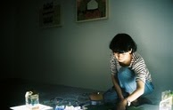

蘇子涵
TSU HAN SU
Biography
蘇子涵
TSU HAN SU
1984 Born in New Taipei City
2007 Taipei Municipal University of Education
2010 Kaohsiung Normal University, Department of Fine Arts
SOLO EXHIBITIONS
2021 "Mobius-"-Capital Art Center, Taipei
2018 "Potential Scenery"-Xinyuan Art, Taipei
2016 Art Stage Singapore, Singapore
2015 Sea Level Under Frees Art Space, Taipei, Taiwan
2014 Tzu-Han Su Exhibition Galerie Grand Siecle, Taipei, Taiwan
2012 Micro Sugar - Sweet Manufacturing Field, Taipei, Taiwan
GROUP EXHIBITIONS
2017 Small World, Zhu Ming Art Museum, Taipei
2016 Lam Gallery, LA
2016 Seaside Town, Tainan, Taiwan
2016 AHAF Asia Art Hotel Fair, Seoul, Korea
2016 Wind Light Day Warm - As a Seat Scenery, Taipei, Taiwan
2015 Wavering Art Museum, Taipei, Taiwan
2015 Wymiana Exchange, Warsaw, Poland
2015 Future Archive, Kanazawa, Japan
2015 Formosa, Taipei, Taiwan
2015 Taipei Young Art, Taipei, Taiwan
2015 Frankie Was Art Fairs, Taipei, Taiwan
2014 Artistic Freedom Day, Taipei, Taiwan
2014 Kaohsiung Art Fair, Kaohsiung, Taiwan
2014 ART OSAKA 2014 Hotel Granvia Osaka, Japan
2014 Taichung Art Fair Taichung, Taiwan
2014 Viewpoint Feast, Tainan, Taiwan
2014 12th Taoyuan Creation Award, Taoyuan, Taiwan
2014 The Next Big Star, Taipei, Taiwan
2014 Vol.1 Bio Apartment Vol.1, Taipei, Taiwan
2014 Taipei Young Art, Taipei, Taiwan
2014 Rookie First Stage, Taipei, Taiwan
2014 Flip Mountain Old Story Ideas Taipei, Taiwan
2014 Impossible Voyage, Taipei, Taiwan
2014 Sweet Melancholy, Taipei, Taiwan
2013 Class Dessert, Kaohsiung, Taiwan
2013 Made a Cake Children - Double Union, Tainan, Taiwan
2013 Tainan Art Fair, Tainan, Taiwan
2012 Dessert History, Taipei, Taiwan
2012 Taichung New Look Three-dimensional Class, Taichung, Taiwan
2012 Artist of the security zone,Taipei, Taiwan
2012 Nomadic version, Kaohsiung, Taiwan
2012 Youth Vocal, Kaohsiung, Taiwan
2012 Model - to Plan an Event Shift, Taipei, Tainan, Taiwan
2012 Thin Rod NO.2012, Kaohsiung, Taiwan
2011 Private Message - Whisper My City over 349 Arts Space, Kaohsiung, Taiwan
2011 Tenth Artist Fair, Kaohsiung, Taiwan
AWARDS
2021 Kaohsiung Award
2018 "Dimensions of the City", 2018 I ART, second prize
2015 National Art Award Photography, Taichung, Taiwan
2014 Asian Creative Awards Vol.1
2014 12 Dimensions Taoyuan Creation Award, Taoyuan, Taiwan
2014 My First Stage - Young Artist, Taipei, Taiwan
2013 New Art Award 2013 in Tainan, Tainan, Taiwan
2012 Selected Taichung New Look Three-dimensional , Taichung, Taiwan
2011 Selected Taoyuan Creation Award
RESIDENCY
2019 CHANDER HAAT ，Kolkata，India
2017 Taipei Arts Village, Taipei, Taiwan
2014 Gold Museum, Taipei, Taiwan
PUBLICATIONS
2013 One Pages and One house, Taipei, Taiwan